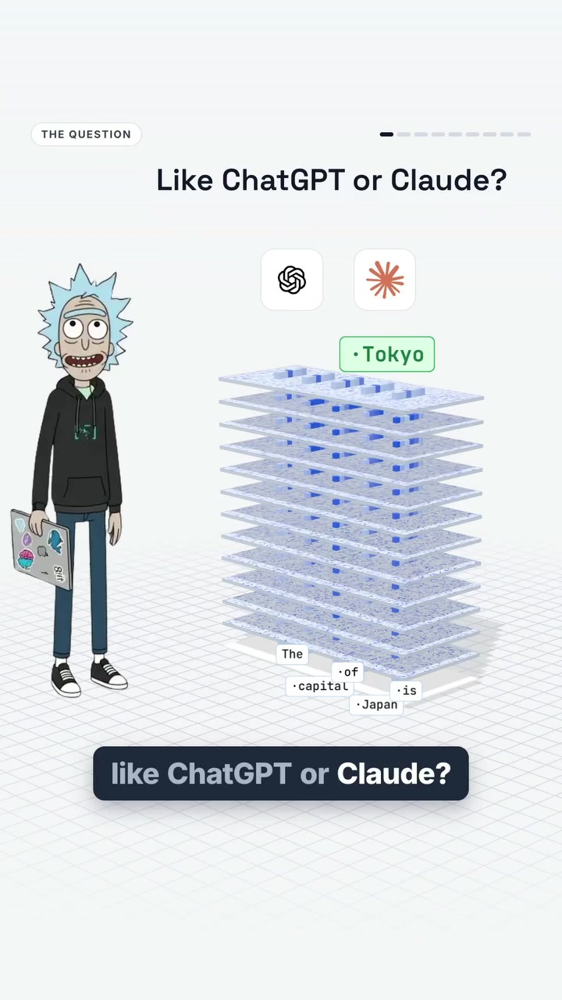
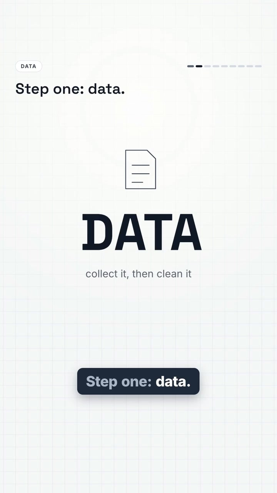
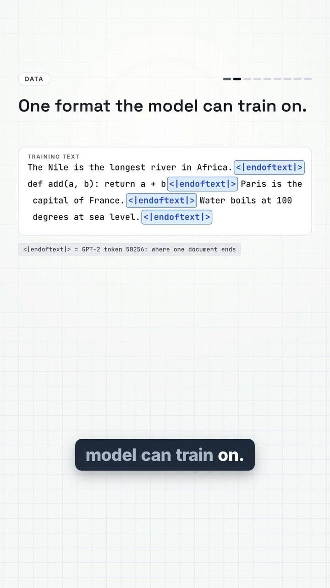
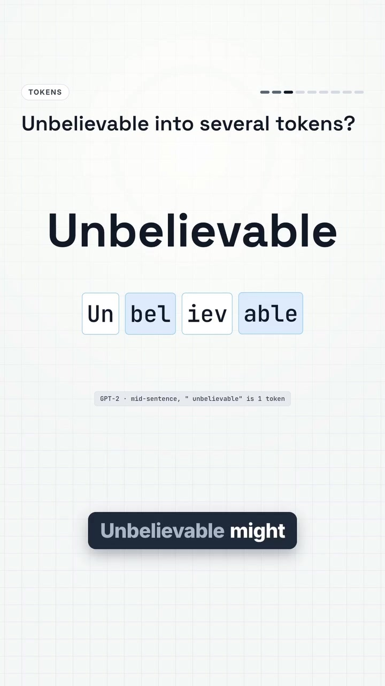
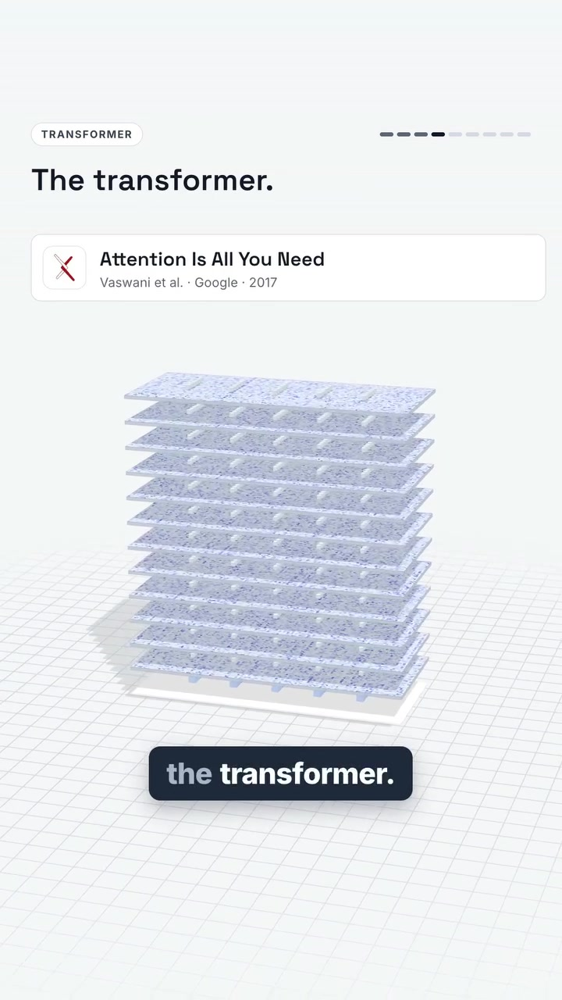

AI · LLM-Architecture
How Large Language Models Are Actually Built: The 6-Stage Engineering Pipeline
No engineer ever hand-coded the rules that allow ChatGPT or Claude to write Python, translate Japanese, or solve calculus problems. The entire capability of modern frontier models emerges from a single mathematical objective repeated trillions of times across thousands of GPUs: predict the next token and reduce loss. This guide breaks down the full 6-stage engineering lifecycle from petabyte-scale data cleaning to distributed tensor-parallel cluster serving.
Visual Reference Stills





The 6 Engineering Stages
Petabytes of web scrapes (Common Crawl, FineWeb 15T tokens), books, GitHub repositories, and Wikipedia are filtered. MinHash and LSH algorithms remove near-duplicate pages; toxic/spam filters strip low-quality SEO text; and heuristic parsers clean formatting artifacts.
Models never process raw characters or words. A vocabulary of ~100k–128k subword tokens is built via Byte Pair Encoding (BPE). Words like "Unbelievable" fragment into sub-tokens (Un • bel • iev • able). Each token ID maps to a high-dimensional continuous vector (e.g., 4096 dimensions).
Stacked decoder layers calculate pairwise attention across all tokens in the context window. In the sentence "The programmer fixed the server because it crashed," an attention head routes 54% of "it"'s attention weight directly to "server" rather than "programmer".
One unified objective: next-token cross-entropy loss minimization. Over 16,000 GPUs running in parallel (e.g. Meta Llama 3) ingest trillions of tokens. Forward pass guesses next token → backward pass computes gradients → optimizer nudges billions of weights slightly downhill.
A base pre-trained model is merely an autocomplete engine. Post-training transforms it into a helpful, truthful assistant through Supervised Fine-Tuning (SFT) on curated dialogues, Reinforcement Learning from Human Feedback (RLHF), and Rule-Based Reward Models (did the unit test pass? was the math derivation correct?).
A 405-billion parameter FP16 model requires ~810 GB of VRAM just to store model weights, while single enterprise GPUs hold 80GB (H100). Serving at scale requires 8-way Tensor Parallelism (TP), Pipeline Parallelism (PP), FP8/INT4 quantization, and PagedAttention (vLLM) to serve millions of concurrent requests.